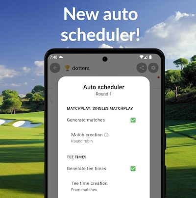
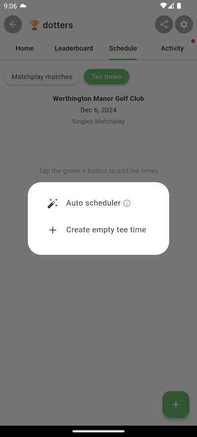
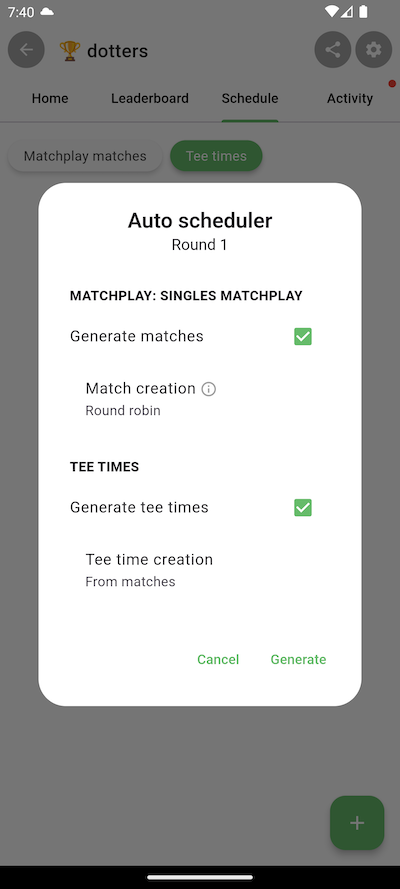
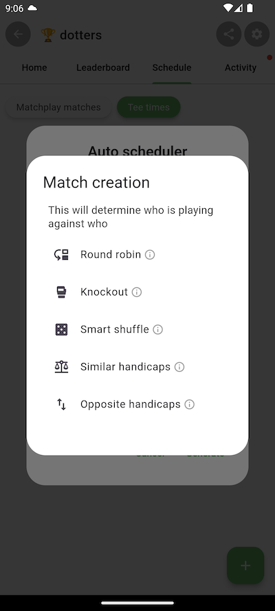

With the new auto scheduler, you can create all your matches and tee times in seconds! You can choose from options like Round Robin, Knockout (or Matchplay Bracket), Smart Shuffle, Similar Handicaps and more.

In your tournament, make sure you've added a format and then navigate to the Schedule tab. Then tap the green + button -> Auto scheduler.

If your format supports matches, you'll tee a 'Generate matches' section in the Auto Scheduler. You can choose how the teams are
generated (if you're using a team format like Ryder cup and you can choose how the matches are generated (who plays against who).
You can also choose how your tee times are generated. If you're playing a format that supports matches, normally you will auto create
the tee times from the matches that are generated. If your format does not support matches, then you can choose from options like
Smart Shuffle or Similar Handicaps.
Then just tap Generate and let the app take care of the rest!

If your tournament consists of multiple tournament rounds, you can run the scheduler for each round in the tournament.
If you want to run a Knockout or Bracket style tournament, then wait until all matches in the round are complete and then
choose Knockout for subsequent rounds. This will automatically pair up the winners from the previous round.